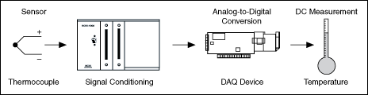
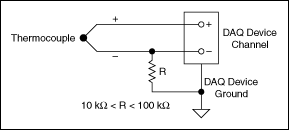

|
Note��Temperature measurements may require you to condition the signal. The conditioning requirements depend on your sensor. Refer to the Overview of Temperature Sensor Types for an explanation of sensor types and conditioning requirements. |
A popular way to measure temperature with a DAQ device is to use a thermocouple, as shown in the following illustration, because thermocouples are inexpensive, easy to use, and easy to obtain. Thermocouples produce a voltage that varies based on temperature. Using a thermocouple, you can measure a voltage and use a formula to convert the voltage measurement to temperature.

The typical wiring for a thermocouple, as shown in the following illustration, uses a resistor, R, only if the thermocouple is not grounded at any other point. If, for example, the thermocouple tip were already grounded, using a resistor would cause a ground loop and result in erroneous readings.

You also can measure temperature using Resistance Temperature Detectors (RTD) and Thermistors.
Refer to the following VIs for examples of performing this measurement. You must have a driver installed to find examples for that driver.
You can use the DAQmx - Data Acquisition VIs to perform this measurement. Find related examples:
 �Thermocouple - SW-Timed Input
�Thermocouple - SW-Timed Input
You also can use the DAQ Assistant Express VI to perform this measurement.
 �Add�
�Find
�Add�
�Find
You can use the FieldPoint VIs to perform this measurement. Find related examples:
�Advanced FieldPoint
�Analyzing and Processing Signals